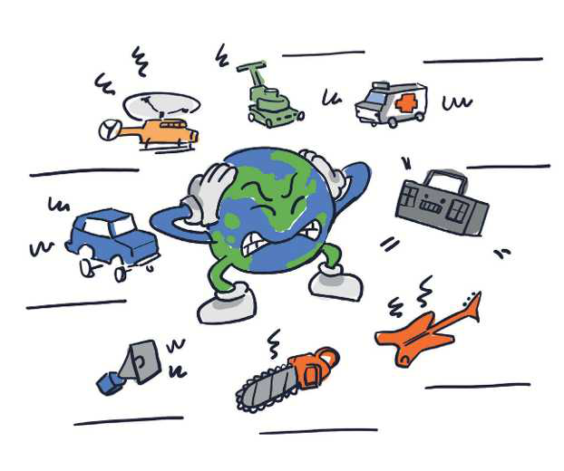

TEMATIKA 5: MJEDISI DHE SHËNDETI2. Zhurmë dhe pluhur në punëtorinë e xhaxhi Burimit
Puno në klasë
Ndihmë: si të punoj?
Zgjidh të gjitha përgjigjet e sakta. Mund të zgjedhësh më shumë se një. Kur të mbarosh, shtyp butonin “Dërgo”.
2.
Shiko figurën. Çfarë e ka shqetësuar Tokën tonë?
Zgjidh të gjitha objektet që e shqetësojnë Tokën me zhurmën e tyre.
